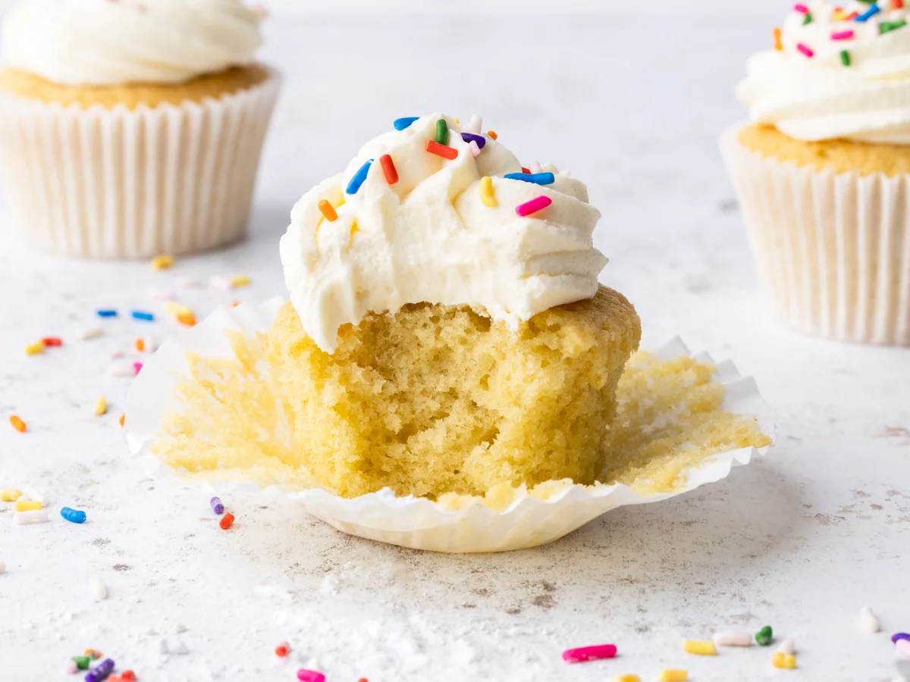

Cupcakes

Easy vanilla cupcake recipes
Enjoy the simple things in life. Like the perfect vanilla cupcake. Make Nielsen-Massey's easy vanilla cupcake recipe, your go-to cupcake of choice. With the lightest, fluffy vanilla sponge topped with the smoothest, vanilla buttercream, you are on to a winner.
Ingredients
For the cupcakes
- 150g Unsalted butter (softened)
- 150g Caster sugar
- 3 Eggs (meium)
- 150g Self raising flour
- 1 tsp Vanilla extract
For the buttercream
- 125g Unsalted butter (softened)
- 2 tbsp vanilla bean paste
- 250g icing sugar
- 1/2 tbsp milk
Steps
- Preheat the oven to 180°C/160°C/gas mark 4 and line a 12-hole muffin tin with cupcake cases.
- Cream together the butter and sugar in a bowl until pale and fluffy. Add the eggs one at a time followed by a tablespoon of the flour mix to prevent curdling and keep the batter smooth. Stir in the vanilla extract.
- Fold in the remaining flour then divide the mixture evenly between the paper cases.
- Bake in the oven for 18-20 minutes or until a skewer comes out clean. Leave to cool on a cooling rack.
- To make the buttercream beat together the softened butter, vanilla bean paste and half the icing sugar until smooth. Add in the remaining icing sugar and milk and mix again until soft and fluffy.
- a piping bag fitted with a star nozzle with the buttercream and pipe swirls onto the cupcakes to finish.
- add decoration or sprinkles and Enjoy
home